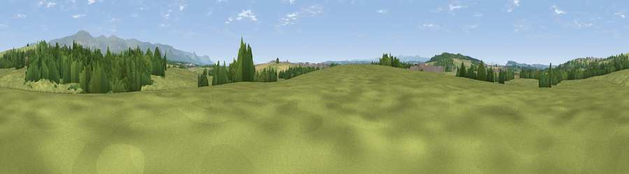

Viewpoint near Temple Sowerby
#25110 in England · top 84% of its area beats it · near Temple Sowerby · footpathWhere it is
The exact computed spot (NY 61592 27714). Click the marker for map links.
Public access: a public right of way passes within 0 m of this spot. Computed from Natural England's CRoW access layer and OpenStreetMap rights of way — not the legal definitive map. Always verify locally.
The view, rendered

A 360° render of this exact spot computed from the terrain model, tree cover and land cover — summer colours, afternoon light, calibrated against photographs of famous viewpoints. Real trees, hedges and buildings will differ in detail.
The panorama
Grey silhouette: terrain skyline in each direction (720 bearings, Earth curvature and refraction included). Dashed green: skyline with trees (+15 m) and buildings (+8 m) as obstacles. Blue strip: how far the ground is visible on each bearing.
Where the view opens
Wedge length = distance to the farthest visible ground on that bearing (vegetation-aware). Rings at 10, 25 and 50 km.
What fills the view
72% grassland · 21% woodland · 6% cropland
Angular shares of the visible panorama (visual magnitude), not map area. Landscape diversity 0.33 (0–1 Shannon).
Key numbers
More beautiful places nearby
The staircase of upgrades: each row has a higher view potential than everything closer. Driving times are estimates from straight-line distance, calibrated against real road routing — check an actual route before setting out.
| Place | Direction | Drive | Score |
|---|---|---|---|
| Viewpoint near Newbiggin | NNE · 1 km | ~3 min | 62.7 |
| Viewpoint near Cliburn | WSW · 3 km | ~8 min | 69.0 |
| Knock Pike | E · 7 km | ~14 min | 71.3 |
| Viewpoint near Blencarn | NE · 8 km | ~15 min | 76.2 |
| Cross Fell | NE · 10 km | ~19 min | 78.7 |
| Viewpoint near Plumpton | NW · 13 km | ~24 min | 78.9 |
| Viewpoint near Watermillock | WSW · 17 km | ~29 min | 82.6 |
| Viewpoint near Watermillock | WSW · 17 km | ~30 min | 83.5 |
54.64306, -2.59666 · source: osm viewpoint · position refined by local search. Computed location — check access rights before visiting.